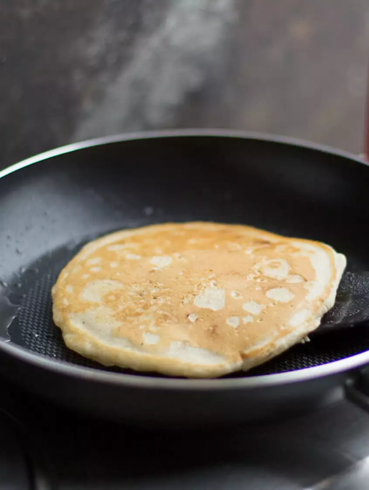

Hotcakes

Description
With this recipe you'll cook 10 delicious pancakes with cream of wheat cereal.
Ingredients
- 1 egg
- 2/3 cup fat-free milk
- 2 teaspoons vegetable oil
- 1/2 cup Maple Grove Farmes Complete Pancake and Waffle Mix
- 1/2 cup Original cream of wheat cereal
Steps
- Beat egg, milk, and oil in large bowl with wire whisk until well blended. Add pancake miz and uncooked cereal; stir just until moistened.
- Ladle batter onto hot greased griddle or skillet, using 1/4 cup batter for each pancake. Cook until bubbles form on tops, then turn to brown other sides.
- Top pancakes evenly with 1-1/2 cups cut-up fresh fruit and one 8-oz. container of your favorite flavor of low-fat yogurt mixed with 1 tbsp. honey.
Back to home